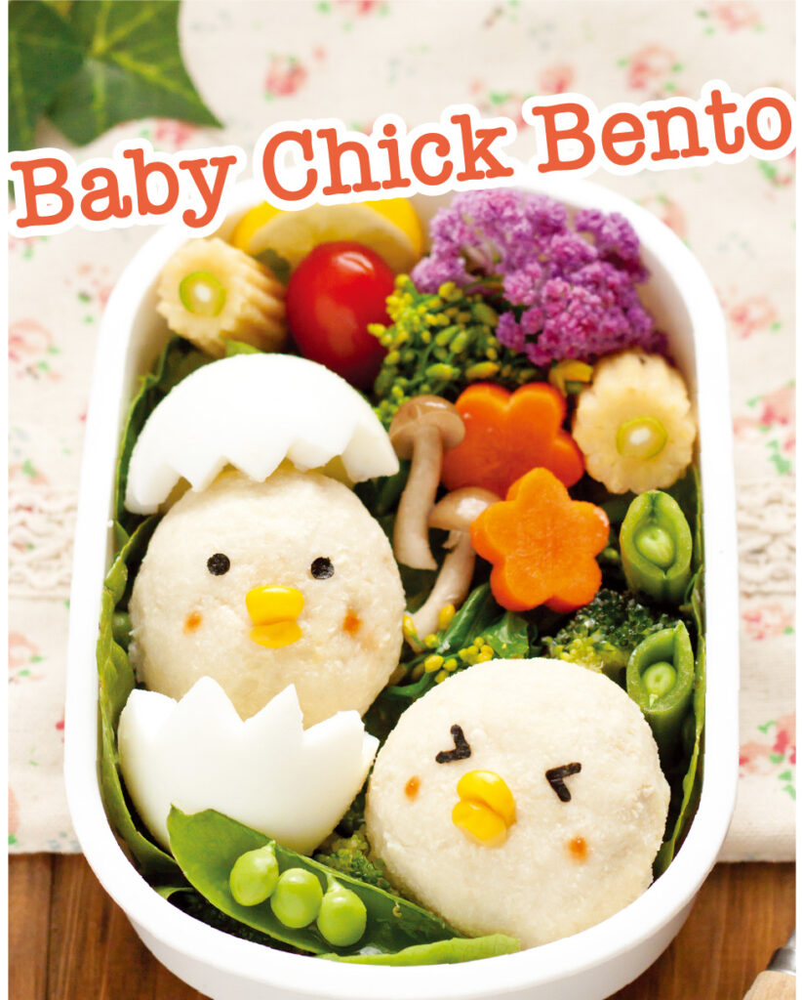

Baby Chick

Description
Create a Baby Chick using potatoes, egg, corn, and nori seaweed!
Source: Japan up Magazine
Ingredients
- Mashed Potatoes
- 1 Boiled Egg
- a piece of Nori Seaweed
- 4 frozen corn kernels
Directions
- Form Mashed potatoes into two small round balls using plastic wrap. To do this, place a dollop onto the center of a sheet of plastic wrap, then fold the ends up and twist to create the ball shape. You can add corn, cheese, or vegetables inside at this step, if you would like, by placing them onto the mashed potatoes before molding.
- Next we create the cracked egg. Use a knife to cut a zig-zag shape into the Boiled Egg all the way around the side, taking care not to pierce down into the yolk. Carefully remove the egg white from the yolk.
- Arrange Mashed potato balls into your bento box. Place the two ends of the "Cracked Shell" egg whites on either side of the Potato ball to show the chick popping out of the shell!
- Cut small circles from the Nori Seaweed to use as eyes for your Baby Chick, you can use scissors or hole punch. Use two kernels of corn as the top and bottom parts of a beak. Additionally, use sauce like ketchup to paint cute blush!